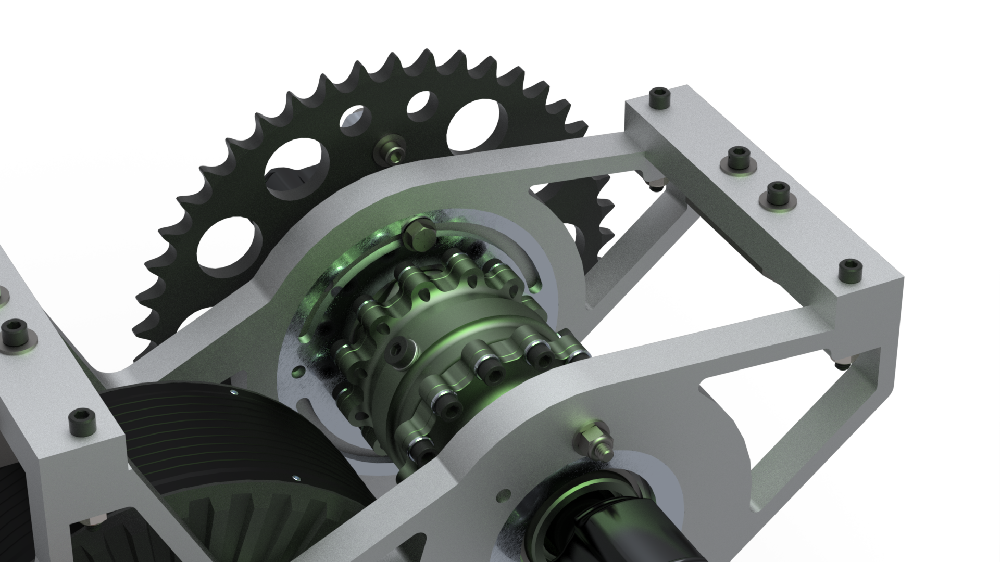
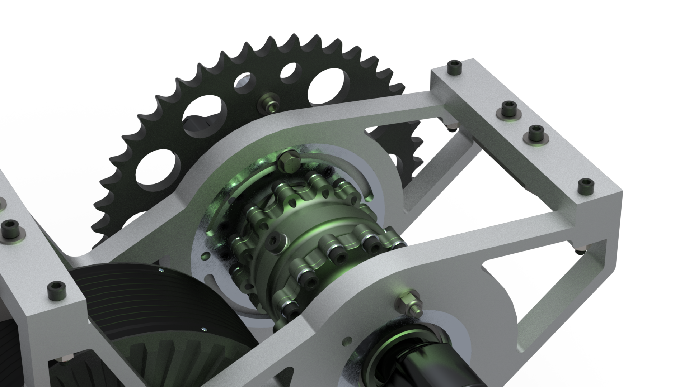
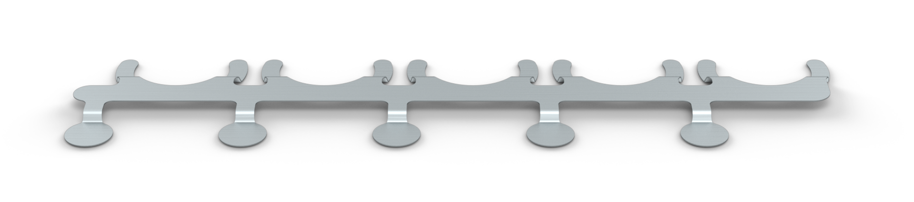
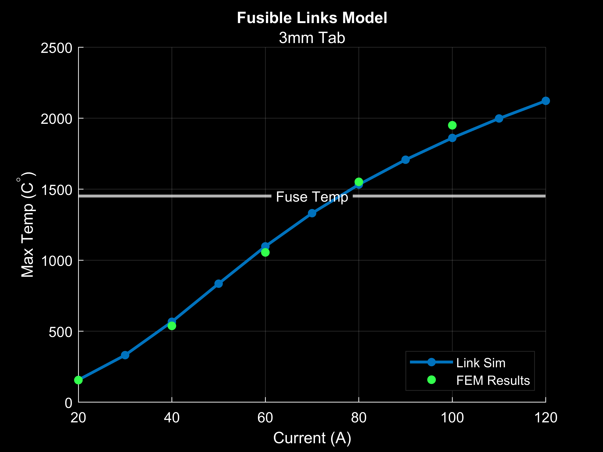
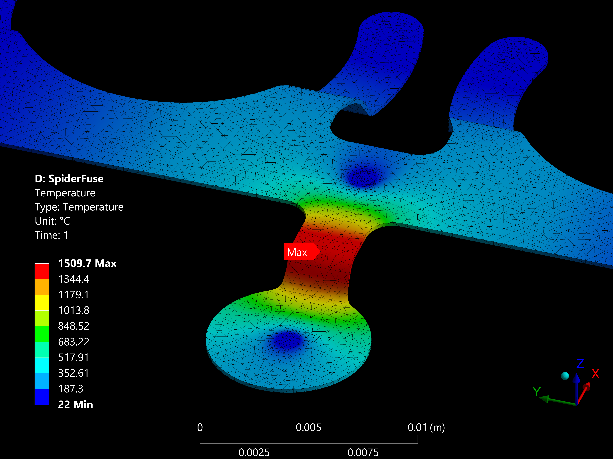
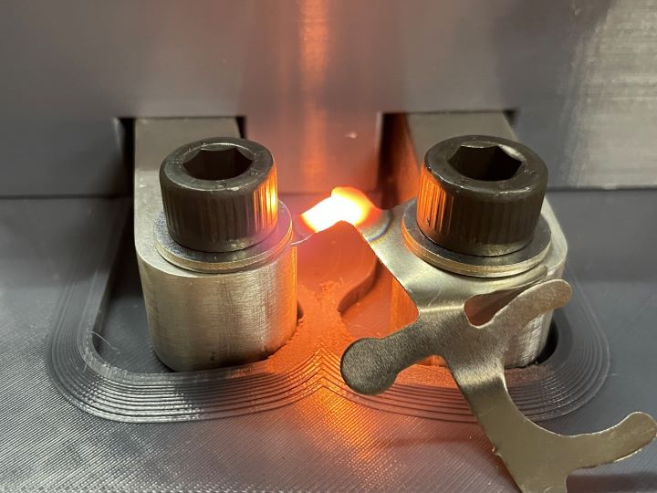

Lamp
A custom dimable LED desk light
Olin Electric Motorsports is a student-run team where we develop an electric racecar from the chassis up to compete in the Formula SAE Electric competition. I have been on the team for 3 years where I have taken on a variety of roles and projects. As the team's current mechanical design lead, I oversee the core development across the suspension, drivetrain, accumulator, and cockpit subteams of our latest car revision.
The passive chain tensioner is a critical component in the car's drivetrain to ensure proper power delivery between the Emrax 228 motor and Drexler differential while eliminating shock loading in the chain The tensioner relies on an eccentric bearing block to make fine adjustments to the distance between the differential and motor.


 

I performed hand calculations to justify a bolt pattern that would meet the static loading
requirements.
I also checked that my design still had positive margins under the worst-case dynamic shock load
arising from exsess chain slack.
To gain insight into the strength of my part, I ran a structural simulation in Ansys Mechanical and
used frictional contacts and pre-loaded bolts to produce a refined model of the mechanism
interactions.
After reaching a design lock on the system, I machined the parts on a CNC mill.
After removing the pedestal, I used a boring head on the mill to bring the bearing hole to its final
dimension for a locational clearance fit with the bearing.
Our MK-VI car runs on a custom 400-volt electric battery made up of 502 individual lithium-ion cells. The cells are connected with spot-welded nickel tabs which are carefully designed to melt at a certain fuse current. This safety measure is used to isolate a cell in the case of a thermal runaway scenario.
I derived a 1st-principals thermal model to guide the design of the "fusible links". The model considers steady-state conduction, convection, and radiation to predict the temperature profile in the link for a given current. I then used a thermal FEA simulation to generate a compensation factor to account for complex geometric effects not accounted for in the analytical model.
  The model was validated with experimental data where we measured the current required to melt a series of test-links. The data showed impressive agreement with the model across a range of link sizes and currents. In the future, this model will accelerate fusible-links design by automatically proposing a suitable link geometry for a given fuse current requirement.
Once the link design was finalized, I helped to create the manufacturing tools and processes for welding the battery segments.
I designed a sheet-metal stamp to bend the nickel tabs into shape with accuracy and speed.
I also made a multifunctional alignment jig to constrain the tabs during welding and provide insulation to the cells for added safety.
I worked with another student to redesign the steering system on the electric go-kart test platform vehicle. I used Euler beam equations and FEA simulations to design a mounting bracket for the new rack and pinion system. I went on to fabricate the brackets and install the new steering system on the vehicle.


A custom dimable LED desk light
A novelty CNC pick & place machine

A full-featured avionics suit developed for high-power model rockets